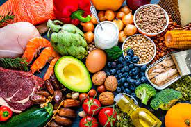

Добро пожаловать на проект "Витаминка" ! В этом вэбсайте вы найдёте информацию про то ка улучшить своё здоровье, советы от проффисианальных докторов, также лайфхаки для похудения. Улучшайте свой организм вместе с нами, наш девиз простой ! Береги своё здоровья и природу сохрани, спорт укажет верный путь ! На будущее вам скажу про курсы по ПП ( правильному питанию ), про виды диета, про ответ на вопрос: "Как стать диетологом" и так далее.

диета
Научитесь вести диету, и мы вам гарантируем что вы похудейте, и ваше здоровв станет лучше ем было
Дальше вы сможете узнать много советов для своего здоровья и не только. Вам эти советы дадут лучшие диетологи из разных стран мира. Чтобы получить успех выполняйте эти советы.
Дыхание
Казалось бы, что здесь такого... А это действительно важно. Овладев техникой диафрагмального дыхания, Вы сможете многое: контролировать свое психоэмоциональное состояние, уметь успокаиваться в стрессовой ситуации, замедлить старение, избавиться от прыщей и многое другое Сергей Попов
Общение с людьми
Речь идет, конечно, о позитивном общении, которое может принести удовольствие. Так, вечер, проведенный в кругу друзей может зарядить Вас энергией на всю неделю. И не забывайте о невербальном общении: прикосновения, объятия, рукопожатия. Все это очень полезно для нашего эмоционального и физического состояния. Владислав Петухов
Отдых в санатории
У моря проводить отпуск приятнее всего, поэтому рекомендуем совмещать приятное с полезным. В лучших санаториях Анапы предлагают разновидные процедуры, основанные на природных компонентах, например, грязевые ванны или плавание в крытых бассейнах в Анапе, наполненных минеральной сероводородной водой. Марьяня Сёмёновна
Активный образ жизни
Совершенно не обязательно бежать в фитнес-зал, чтобы поднимать железо. Достаточно пару километров пробежаться вечером перед сном или заняться любимыми танцами. Это не только подтянет мышцы, но и подарит вам хорошее настроение. Занятия дома тоже приветствуются, более того, достаточно зайти в интернет и найти там подходящие видео-инструкции. Филипп Папов
Пейте больше воды
Да, мы действительно забываем про чистую воду. В день необходимо выпивать хотя бы литр! И чай, кофе, сладкие газировки — это не вода, более того. некоторые из перечисленных только вредят организму. Также необходимо периодически посещать бюветы минеральной воды, чтобы употреблять воду, богатую полезными минеральными веществами. Александр Петрович
Сон
Сколько времени Вы отводите на сон? 4-5 часов? Этого не достаточно организму для восстановления. Конечно, от усталости и раздражительности не избавиться, пока не отрегулировать время сна. А также рекомендуем заменить телевизор книгой. И, конечно, не скупитесь на хороший матрас и подушку. Алина Крылова
Отказ от вредных привычек
Очень важный пункт, говорящий сам за себя. И главное, помните, что Ваши вредные привычки вредят не только Вам, но и Вашим близким, в первую очередь, детям. Подумайте о том, какой шаг вперед для них и для себя самого Вы сделаете, отказавшись от курения, алкоголя и прочего. Не всегда сделать это просто, поэтому в данном случае помогают психолог Валентит Никитин
Прогулки на свежем воздухе
Из чего состоит жизнь в будние дни? Дом, транспорт, работа, транспорт, дом. А если и работа сидячая, то это совсем никуда не годится. А ведь ничего не мешает вечером прогуляться. Да хоть вокруг дома с собакой. Или в парке с друзьями, любимыми или детьми. Все это идет нам на пользу. Пётр Васильев
Правильное питание
Оно необходимо не только для того, чтобы привести себя в форму, но и для нормализации общего состояния организма. Мы — то, что мы едим. И это не просто поговорка. Стоит исключить из рациона вредный фастфуд, жирное, выпечку, соленое, как Вы ощутите значительные изменения своего самочувствия Григорий Волков